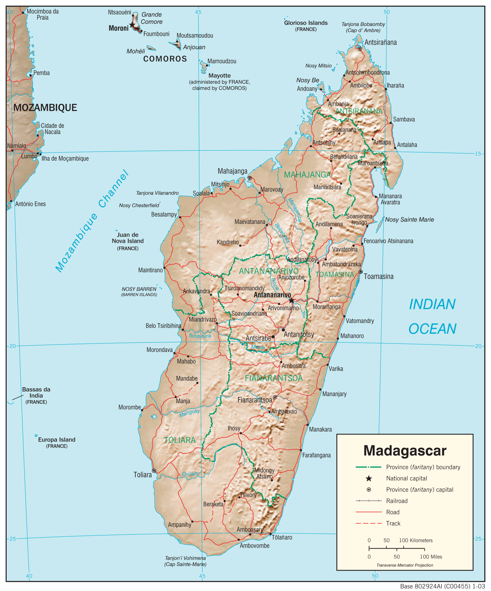
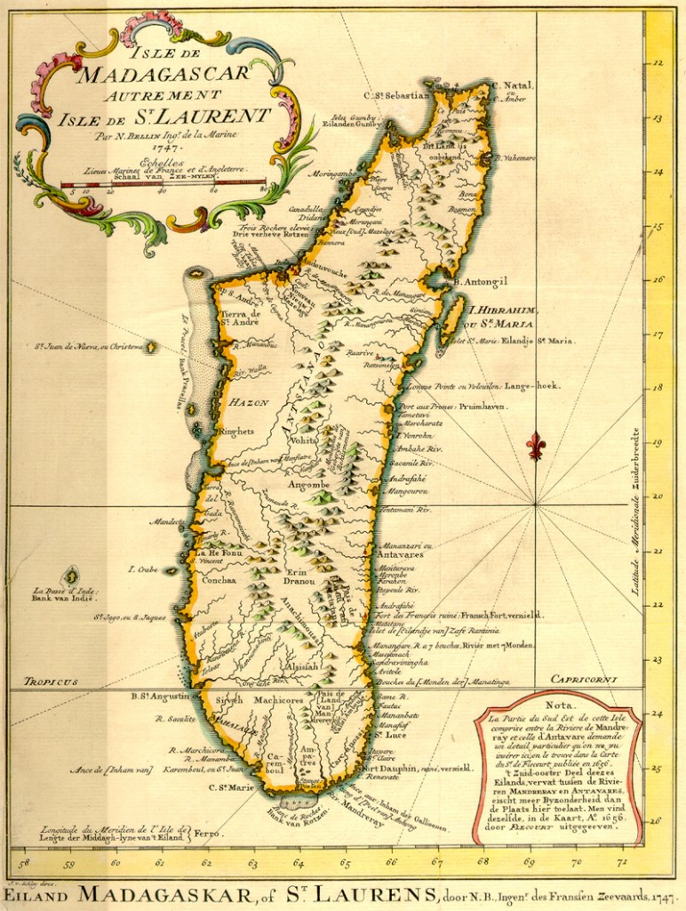
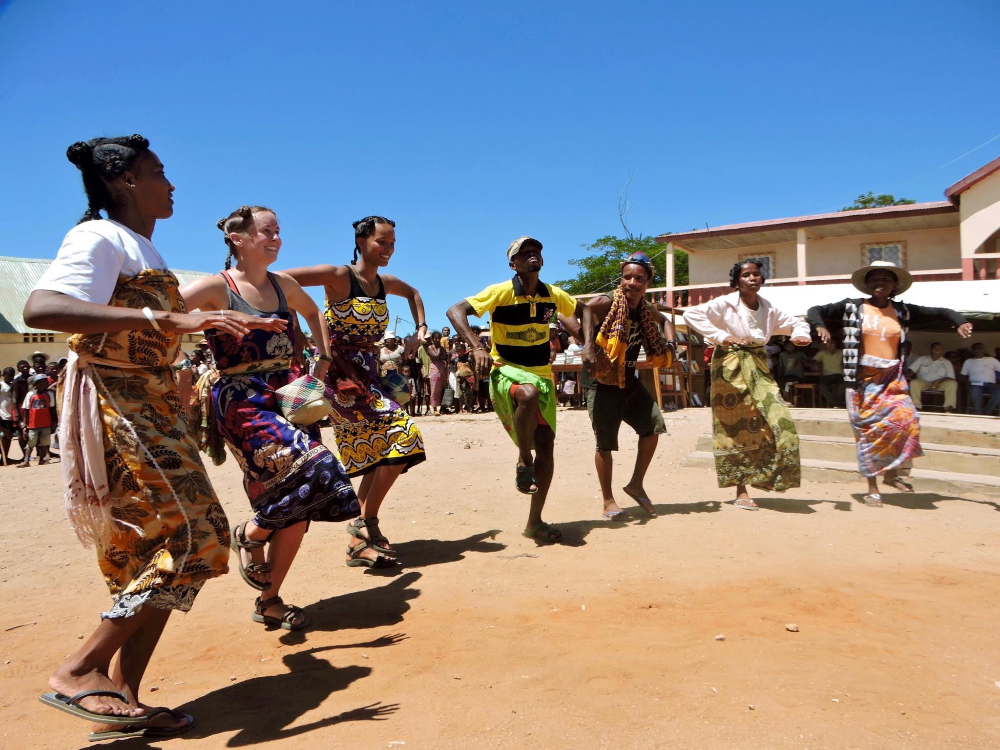

Madagascar, une île située dans l'océan Indien, est connue pour sa biodiversité unique et son héritage culturel riche. Ancienne colonie française, elle conserve le français comme langue officielle aux côtés du malgache.

Géographie
Une île fascinante située au large de l'Afrique de l'Est.

Histoire
Colonisée par la France en 1896, indépendante depuis 1960.

Culture
Un mélange unique de traditions africaines et asiatiques.
Cliquez pour un fait amusant !